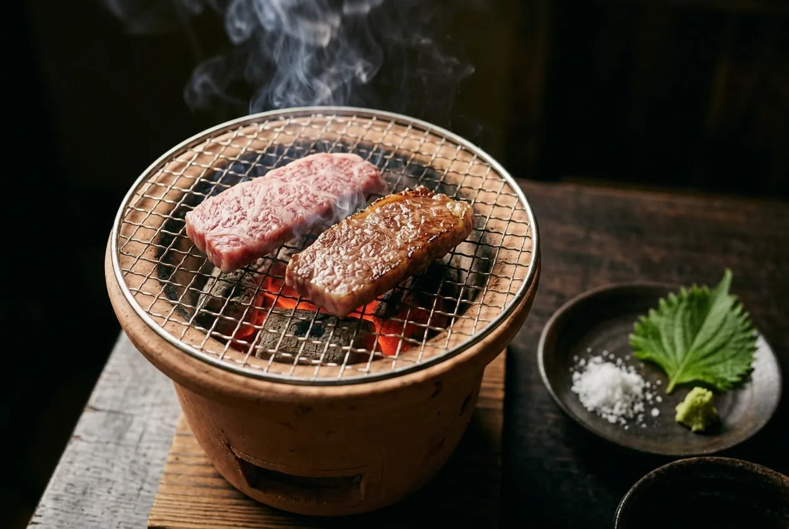
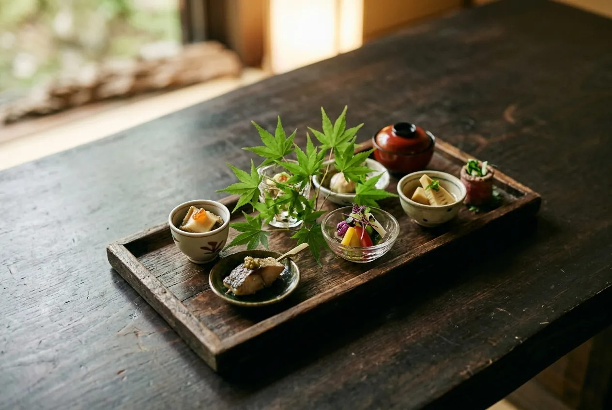
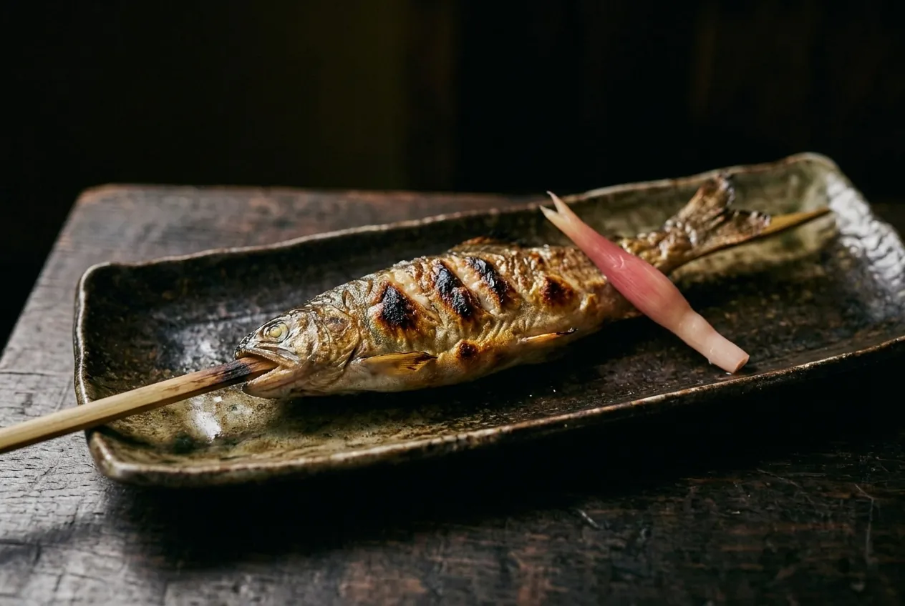
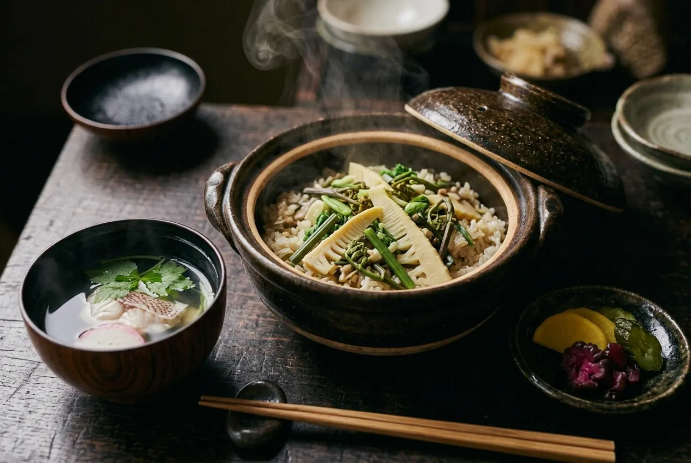
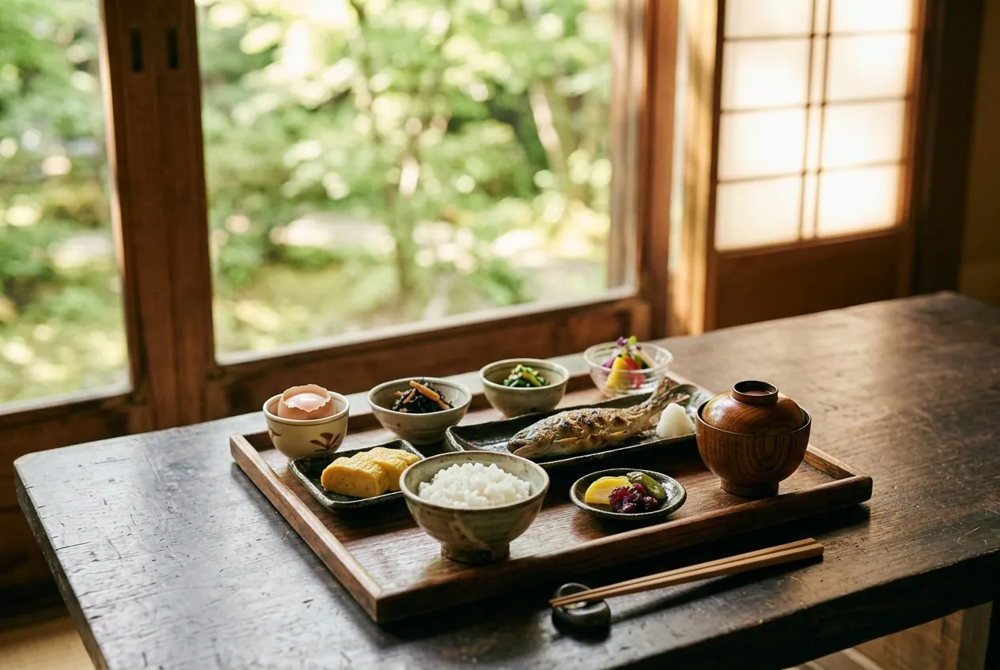

上州牛の炭火焼き
群馬で育った上州牛を、お席の七輪で。片面をさっと焼いて、塩とわさびで召し上がってください。

夕食は、上州の山と川でとれたものを、ひと皿ずつ。
湯上がりの体にやさしい味つけで、個室のお食事処にお運びします。

群馬で育った上州牛を、お席の七輪で。片面をさっと焼いて、塩とわさびで召し上がってください。

吾妻川の上流で育った岩魚を、炭火でじっくり。頭から尾まで、香ばしく焼き上げます。

しめは土鍋で炊いたご飯。ふたを開けると、山菜とだしの香りが立ちのぼります。
八寸
季節の小さな料理を7〜8品
お造り
ニジマスと岩魚、山のわさびを添えて
焼物
岩魚の塩焼き
強肴
上州牛の炭火焼き
食事
山菜の炊き込みご飯・お吸い物・香の物
甘味
花豆の甘煮と抹茶のわらび餅
※ 献立は季節と仕入れによって変わります。

焼き魚、だし巻き卵、小鉢をいくつか。温泉卵は、源泉の熱でゆっくり火を通しています。

夕食・朝食とも、お部屋ごとの個室にご用意します。小さなお子さまとご一緒でも、気がねなくお過ごしください。
ご予約のときにお知らせください
食べられないもの・アレルギーがある場合は、ご予約のときか、ご到着の3日前までにお電話でお知らせください。できるかぎり別の料理にお取りかえします。